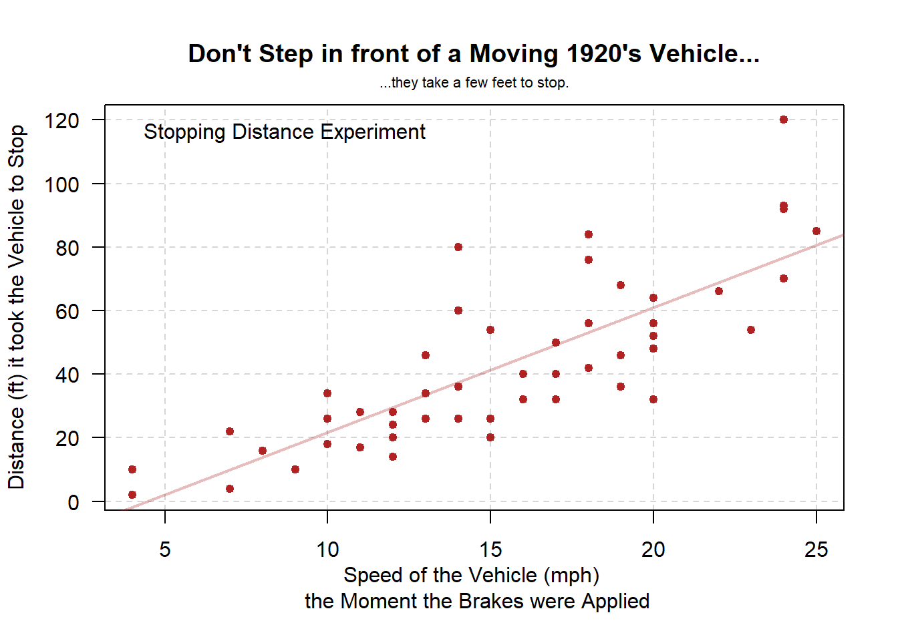
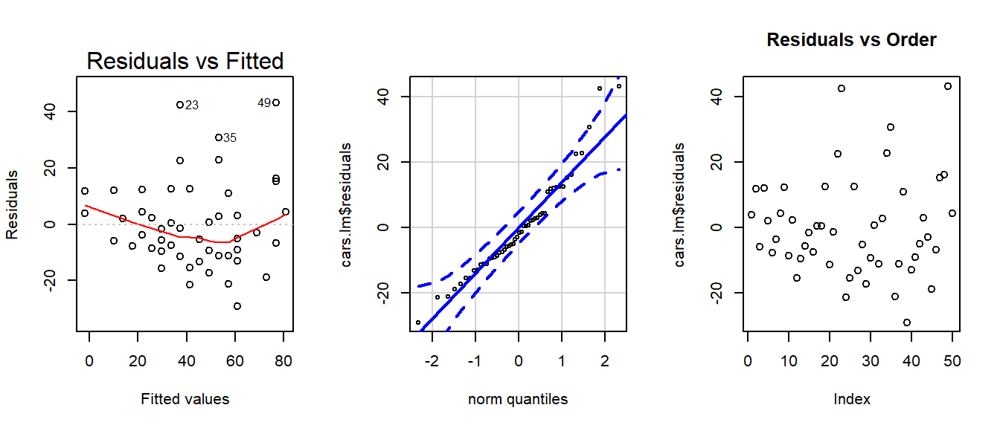

library(pander)
library(car)
library(DT)
library(mosaic)
library(tidyverse)Every licensed driver knows that when you press your brakes, the car stops. But how quickly? And how much does the stopping distance depend on the speed of the vehicle? This analysis, though quite outdated unless you are driving around a vintage 1920’s vehicle, bears a solution on this question with the equation
\[ \text{Stopping Distance} = -17.6 + 3.9 \times \text{(Speed of Vehicle (mph))} \]
This shows that (on average) for every additional mile per hour increase in the speed the vehicle is going, the car will take an additional 3.9 ft (essentially 4 more feet) to stop. Keep in mind however that actual stopping distances at higher speeds vary as much as \(\pm 30\) feet from this general estimate.
plot(dist ~ speed, data=cars, pch=20, col="firebrick", cex=1.2, las=1,
xlab="Speed of the Vehicle (mph) \n the Moment the Brakes were Applied", ylab="Distance (ft) it took the Vehicle to Stop",
main="Don't Step in front of a Moving 1920's Vehicle...")
mtext(side=3, text="...they take a few feet to stop.", cex=0.7, line=.5)
legend("topleft", legend="Stopping Distance Experiment", bty="n")
cars.lm <- lm(dist ~ speed, data=cars)
abline(cars.lm, lwd=2, col=rgb(.689,.133,.133, .3))
abline(h=seq(0,120,20), v=seq(5,25,5), lty=2, col=rgb(.2,.2,.2,.2))
A regression was performed in R to obtain the above results. The code and output of the regression is included below. The model assumed by the regression analysis was \[ \underbrace{Y_i}_\text{Distance} = \overbrace{\beta_0}^\text{y-int} + \overbrace{\beta_1}^\text{slope} \underbrace{X_i}_\text{Speed} + \epsilon_i \quad \text{where} \ \epsilon_i \sim N(0, \sigma^2) \]
Summary of the Regression
cars.lm <- lm(dist ~ speed, data=cars)
pander(summary(cars.lm))| Estimate | Std. Error | t value | Pr(>|t|) | |
|---|---|---|---|---|
| (Intercept) | -17.58 | 6.758 | -2.601 | 0.01232 |
| speed | 3.932 | 0.4155 | 9.464 | 1.49e-12 |
| Observations | Residual Std. Error | \(R^2\) | Adjusted \(R^2\) |
|---|---|---|---|
| 50 | 15.38 | 0.6511 | 0.6438 |
There does appear to be some evidence of a relationship. Assuming the relationship is linear, the equation of the fitted line shown in the plot above is
\[ \underbrace{\hat{Y}_i}_\text{Ave. Dist.} = -17.58 + 3.93 \underbrace{X_i}_\text{Speed} \]
A test of the hypotheses that \[ H_0: \beta_1 = 0 \] \[ H_a: \beta_1 \neq 0 \]
shows that the slope is significant \((p = 1.49e-12)\). Hence the relationship is meaningful.
Assuming the model is appropriate, then we estimate that increasing the speed by 1 mph will result in an extra 3.93 feet of stopping distance (95% CI: (3.1, 4.77) feet). As a general rule of thumb we suggest “4 extra feet of stopping distance for every 1 mph increase in speed.” Note that the baseline of 0 mph actually has a negative stopping distance. Thus we restrict the interpretability of the model to speeds of 5 or more mph. At a speed of 5 mph or less, the stopping distance is essentially zero. (Although, we do note that one vehicle took 10 feet to stop at a speed of 4 mph. Bad driver perhaps? At a minimum the vehicle needs new brakes.)
A check on the appropriateness of the model shows some question about whether the relation should be assumed to be linear or not. The residuals do not depart too dramatically from normality, but case #23 does go out of bounds. We considered removing outliers 23 and 49, but decided to leave them in and deal with the difficulties this causes. Efforts were made in an attempt to correct the potential difficulty with linearity (see the Transformations section below). However, the above model and interpretation was determined to be the most simple, although somewhat questionable, for these data.
par(mfrow=c(1,3))
plot(cars.lm, which=1)
qqPlot(cars.lm$residuals, id=FALSE)
plot(cars.lm$residuals, main="Residuals vs Order")
Here is the data from the experiment for those interested.
datatable(cars)